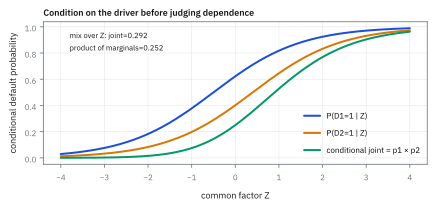
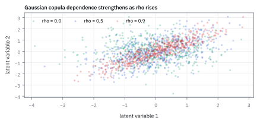
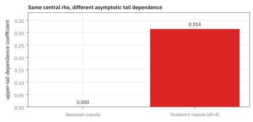
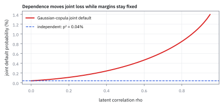

6.6 Conditional Independence and the Gaussian Copula
เมื่อตัวแปรดูเหมือนเกี่ยวข้องกันเพราะปัจจัยร่วม และการแยกโครงสร้างความเสี่ยงด้วยคอปูลา
ร้านเบเกอรี่กับร้านเครื่องมืออยู่คนละฝั่งถนน เหตุใดทั้งคู่จึงปิดตัวเดือนเดียวกัน ทั้งที่ไม่ได้ซื้อขายกันเลย?
เฉลย: เพราะทั้งคู่พึ่งเศรษฐกิจของเมืองเดียวกัน ปีที่เศรษฐกิจดี แต่ละร้านปิดตัว 2% ปีที่แย่กระโดดเป็น 20% ถึงสองร้านจะปิดแยกกันจริงในแต่ละภาวะ ปีแย่ก็ดันให้ทั้งคู่เสี่ยงพร้อมกัน ขั้นที่ 2 จะแสดงว่าโอกาสปิดพร้อมกันสูงกว่าการคูณโอกาสรายร้าน 2.24 เท่า และพอรู้แล้วว่าปีนี้แย่ การปิดของร้านหนึ่งก็ไม่บอกอะไรเพิ่มเรื่องอีกร้าน
Conditional independence คือ independence หลังรู้ปัจจัยร่วม; Gaussian copula คือแบบจำลองที่ใช้ประกอบ distribution เดี่ยวให้เป็นความเสี่ยงร่วม แต่ต้องตรวจ tail dependence เพราะเหตุการณ์ร้ายพร้อมกันอาจมากกว่าที่รูปแบบนี้เห็น
ศัพท์ที่ใช้ในหัวข้อนี้
- conditional independence
- conditional independence คือภาวะที่ Random Variable เป็นอิสระจากกันหลังล็อกค่าปัจจัยร่วม (common factor) แล้ว ใช้แยกผลของปัจจัยร่วมออกจากความเชื่อมโยงที่ยังเหลืออยู่
- copula
- function ที่เชื่อม cumulative probability ของสินทรัพย์เดี่ยว (marginal CDFs) เป็น joint CDF โดยแยกพฤติกรรมเดี่ยวจากโครงสร้างความสัมพันธ์
- Gaussian copula
- model copula ที่ใช้โครงสร้างความสัมพันธ์ของตัวแปรแจกแจงปกติ (Normal distribution) มาจำลองความเชื่อมโยงระหว่างสินทรัพย์
- tail dependence
- แนวโน้มที่ random variable หลายตัวจะเกิดเหตุการณ์รุนแรงขั้นสุดขีดพร้อม ๆ กัน เช่น ล้มละลายพร้อมกันในภาวะวิกฤต
- latent variable
- ตัวแปรแฝงที่ไม่สามารถวัดค่าตรง ๆ ได้ในตลาด แต่ทำหน้าที่เป็นปัจจัยขับเคลื่อนร่วมเบื้องหลัง (common driver)
- default
- การผิดนัดชำระหนี้ คือเหตุการณ์ที่ลูกหนี้หรือคู่สัญญาไม่สามารถจ่ายคืนเงินตามข้อตกลงได้ ใช้เป็นตัวแปรผลลัพธ์แบบ 0 หรือ 1
- cumulative distribution function (CDF)
- function ที่รวม probability ตั้งแต่ค่าต่ำสุดถึงจุดกำหนด ใช้เป็นข้อมูลตั้งต้นของ copula สำหรับแต่ละตัวแปร
- AAPL (Apple Inc.)
- บริษัทเทคโนโลยีขนาดใหญ่ของสหรัฐฯ ใช้เป็นตัวอย่างในการระบุคู่ค้าทางธุรกิจในพอร์ตสินเชื่อ
- probability integral transform
- การแปลง random variable ใด ๆ ผ่าน CDF ของตัวเองให้กลายเป็น Uniform บนช่วง 0 ถึง 1 เพื่อใช้ต่อเข้ากับ copula
สัญลักษณ์ที่ใช้ในหัวข้อนี้
| สัญลักษณ์ | ความหมาย | หน่วย |
|---|---|---|
| $D_1,D_2$ | ตัวบ่งชี้การผิดนัดชำระหนี้ของสองคู่ค้า (1 คือผิดนัด, 0 คือปกติ) | binary (0 หรือ 1) |
| $Z$ | ปัจจัยเศรษฐกิจร่วม (common macro factor) | standardized (ไม่มีหน่วย) |
| $F_1,F_2$ | marginal CDF ของแต่ละตัวแปร | probability (0 ถึง 1) |
| $C$ | function copula ที่สร้างความน่าจะเป็นร่วม | probability (0 ถึง 1) |
| $\rho$ | parameter ความสัมพันธ์แฝงใน Gaussian copula | correlation (-1 ถึง 1) |
| $\epsilon_i$ | ความเสี่ยงเฉพาะตัวของแต่ละบริษัท (idiosyncratic shock) | standardized (ไม่มีหน่วย) |
| $X_i$ | ตัวแปรแฝง (latent variable) ที่วัดสุขภาพทางการเงินของบริษัท $i$ | standardized (ไม่มีหน่วย) |
ที่มาที่ไป: ทำไมของที่ไม่เกี่ยวกันถึงพังพร้อมกัน
ลองนับการผิดนัดของสองบริษัทแยกตามสภาพเศรษฐกิจ ภายในแต่ละสภาพเราอาจสมมติว่าทั้งคู่เป็นอิสระ แต่พอไม่รู้ล่วงหน้าว่าจะอยู่สภาพไหน ความเสี่ยงร่วมจากเศรษฐกิจทำให้การผิดนัดโดยรวมไม่เป็นอิสระได้
Gaussian copula เป็นอีกวิธีประกอบความสัมพันธ์จากตัวแปร Normal ร่วม ต้องแยกการเกิดพร้อมกันที่เกณฑ์ใช้งานจริงออกจาก tail dependence ซึ่งวัด limit ที่เกณฑ์ไกลออกไปเรื่อย ๆ
ประวัติศาสตร์และที่มา: จาก Sklar (1959) สู่ David Li (2000) และวิกฤตตราสารหนี้รวม
ราว ๆ ปี 1959 Abe Sklar นักคณิตศาสตร์ชาวอเมริกัน ได้ตีพิมพ์ทฤษฎีบทของสกลาร์ (Sklar's theorem) ซึ่งระบุว่า joint distribution ใด ๆ สามารถแยกส่วนประกอบออกเป็นสองฝั่งได้เสมอ: ฝั่งแรกคือ marginal distribution ของแต่ละตัว และฝั่งที่สองคือ copula ซึ่งเป็น function ที่ทำหน้าที่ประสานความเกี่ยวพันระหว่างตัวแปร ในช่วงสี่สิบปีแรก ทฤษฎีนี้เป็นเพียงงานคณิตศาสตร์เชิงทฤษฎีที่แทบไม่มีใครนำมาใช้ในตลาดการเงิน
จนกระทั่งในปี 2000 David X. Li นักวิเคราะห์เชิงปริมาณบน Wall Street ได้ตีพิมพ์บทความชื่อ On Default Correlation: A Copula Function Approach เพื่อแก้ปัญหาใหญ่ของวาณิชธนกิจ: ตลาดต้องการรวมพันธบัตรและสินเชื่อบ้านหลายร้อยตัวเข้าด้วยกันเป็น Collateralized Debt Obligation (CDO) แต่ไม่มีวิธีคำนวณโอกาสที่พันธบัตรหลายตัวจะผิดนัดชำระหนี้พร้อมกันอย่างรวดเร็ว
David Li เสนอให้นำ correlation เพียงค่าเดียวมาเชื่อม marginal distribution ของการผิดนัดชำระหนี้ผ่าน Gaussian copula model นี้ทำให้คำนวณราคา CDO ได้อย่างรวดเร็ว แต่วิกฤตการเงินปี 2008 ชี้ให้เห็นจุดตายสำคัญ: Gaussian copula มี tail dependence เป็นศูนย์ เมื่อเกิดวิกฤต หนี้เสียจึงล้มเป็นโดมิโนพร้อมกันเกินกว่าที่แบบจำลองทำนายไว้มาก
คำถามที่เรากำลังตอบ: ปัจจัยร่วมสร้างภาพลวงตาของความสัมพันธ์ได้อย่างไร?
ลองดูคู่สัญญาทางการเงินสองรายในสหรัฐฯ ที่มีความเสี่ยงผิดนัดชำระหนี้ $D_1$ และ $D_2$ ภายนอกดูเหมือนทั้งสองมีความสัมพันธ์กัน แต่หากมีปัจจัยเศรษฐกิจมหภาค $Z$ เป็นตัวขับเคลื่อนหลัก เมื่อเรารู้ค่าปัจจัยร่วมนี้แล้ว ความน่าจะเป็นของการล้มละลายของทั้งคู่จะแยกเป็นอิสระต่อกันได้ การแยกอิทธิพลของปัจจัยร่วมนี้ช่วยให้การสร้างแบบจำลองพอร์ตโฟลิโอมีความเรียบง่ายและเป็นระบบ
สองภาวะเศรษฐกิจ: ตัวเลขที่ใช้ทั้งการทดลอง
| ภาวะ $Z$ | โอกาสของภาวะ | บริษัท A ผิดนัด | บริษัท B ผิดนัด |
|---|---|---|---|
| ดี | 0.7 | 2% | 2% |
| แย่ | 0.3 | 20% | 20% |
ในแต่ละภาวะ A กับ B ผิดนัดอย่างอิสระต่อกัน (โยนเหรียญคนละเหรียญ) สิ่งเดียวที่ทั้งคู่แชร์คือภาวะ $Z$
ขั้นที่ 1 — โอกาสผิดนัดของบริษัทเดียว เมื่อยังไม่รู้ภาวะ
ก่อนรู้ว่าปีนี้เศรษฐกิจดีหรือแย่ บริษัทหนึ่งมีโอกาสผิดนัดเท่าไร
law of total probability จากหัวข้อ 1.7: ถ่วงน้ำหนักโอกาสในแต่ละภาวะด้วยโอกาสของภาวะ ได้ 7.4% ต่อบริษัท
ขั้นที่ 2 — โอกาสผิดนัดพร้อมกัน: คูณได้เฉพาะ *ภายใน* ภาวะ แล้วค่อยถ่วงน้ำหนัก
ตอนนี้คูณได้ไหม สองบริษัทอิสระกันก็ต่อเมื่อรู้ภาวะแล้ว ถ้ายังไม่รู้ ต้องทำทีละภาวะ
บรรทัดแรก: ในภาวะดีทั้งคู่ผิดนัดพร้อมกันด้วยโอกาส $0.02^2$ (อิสระกัน จึงคูณได้) ในภาวะแย่ $0.20^2$ แล้วถ่วงน้ำหนักสองภาวะ ได้ 1.228%
บรรทัดที่สอง: ถ้าเผลอคูณ 7.4% กับ 7.4% เหมือนสองบริษัทไม่รู้จักกัน จะได้แค่ 0.55% ต่ำกว่าความจริง 2.24 เท่า
ส่วนต่างมาจากไหน: ภาวะแย่กระทบทั้งคู่พร้อมกัน วันที่ A ผิดนัดมักเป็นวันที่เศรษฐกิจแย่ ซึ่งเป็นวันที่ B เสี่ยงขึ้นด้วย ทั้งที่ A ไม่ได้ทำอะไร B เลย นี่คือ ‘ผู้กำกับหลังฉาก’ จากประโยคเปิดเรื่อง
ขั้นที่ 3 — นิยามของ conditional independence: รู้ภาวะแล้ว คูณกันได้
หุ้นสองตัวดูเกี่ยวกันเพราะทั้งคู่เกาะตลาด แต่พอตรึงตลาดไว้แล้ว อาจไม่เกี่ยวกันเลย แนวคิดนี้คือฐานของ factor model ทั้งหมด
ใช้ตารางสองภาวะเดิม: พอรู้ว่าปีนี้แย่ แต่ละบริษัทผิดนัด 20% และแยกกัน โอกาสผิดนัดพร้อมกันในปีแย่จึงเป็น 0.20 คูณ 0.20 เท่ากับ 4% ปีดีเป็น 0.02 คูณ 0.02 เท่ากับ 0.04% หลังตรึงภาวะแล้ว ความเสี่ยงที่เหลือแยกกันจริง ส่วนความเกี่ยวกันทั้งหมดอยู่ในภาวะ นี่คือฐานของ factor model ทุกตัว
นิยามแบบทั่วไปเขียนด้วยค่าเฉลี่ย: ค่าเฉลี่ยของ $f(X)g(Y)$ เมื่อรู้ $Z$ เท่ากับค่าเฉลี่ยของ $f(X)$ เมื่อรู้ $Z$ คูณค่าเฉลี่ยของ $g(Y)$ เมื่อรู้ $Z$ ทุก function f กับ g เลือก f กับ g เป็นตัวนับการผิดนัด ก็ได้บรรทัดบนนี้พอดี แบบเดียวกับที่หัวข้อ 6.5 เลือกตัวนับตอนพิสูจน์กฎของเหตุการณ์
ขั้นที่ 4 — โครงสร้างของ Gaussian copula
เครื่องมือที่แยกคำถาม 'แต่ละตัวหน้าตาอย่างไร' ออกจาก 'มันเกี่ยวกันอย่างไร' ทำให้จัดการสองเรื่องนี้แยกกันได้
$u,v$ คือ cumulative probability ของแต่ละตัวแปร, $\Phi^{-1}$ คือการแปลงกลับด้วย standard Normal CDF เพื่อเข้าสู่ระนาบตัวแปรปกติ และ $\Phi_\rho$ คือ bivariate Normal CDF ที่มี coefficient ความสัมพันธ์ $\rho$ function นี้จะแปลงค่ากลับมาเป็นความน่าจะเป็นร่วม
อ่านทีละชั้น: $u=F_X(x)$ คือ ‘อยู่ที่เปอร์เซ็นไทล์ไหนของตัวเอง’ (ตัวเลข 0 ถึง 1) $\Phi^{-1}(u)$ แปลงเปอร์เซ็นไทล์นั้นเป็นค่า z บนระฆังคว่ำมาตรฐาน (จากหัวข้อ 1.11) แล้ว $\Phi_\rho$ ถามว่าสอง z นี้เกิดพร้อมกันบ่อยแค่ไหนถ้ามันมี correlation $\rho$ ผลคือเราใช้ ‘กาว’ ของระฆังคว่ำ โดยไม่บังคับให้ตัวแปรเดิมเป็นระฆังคว่ำ
สร้างสูตรทีละขั้น: สุ่มคู่ Standard Normal $Z_1,Z_2$ ที่ correlation เท่ากับ $\rho$ แปลงแต่ละตัวเป็น $U=\Phi(Z_1)$ และ $V=\Phi(Z_2)$ ทั้งสองตัวมี marginal Uniform เพราะ $P(U\le u)=P(Z_1\le\Phi^{-1}(u))=u$ สำหรับ $0 \lt u \lt 1$
ถามโอกาสร่วม $P(U\le u,V\le v)$ แทนนิยามแล้วใช้การเพิ่มตามค่าของ $\Phi$ จะได้ $P(Z_1\le\Phi^{-1}(u),Z_2\le\Phi^{-1}(v))$ ซึ่งชื่อของมันคือ $\Phi_\rho$ ที่สองเกณฑ์นี้ จึงได้สูตร copula โดยไม่ได้สร้าง probability ใหม่ขึ้นมา
ขั้นที่ 5 — นิยามของ copula: ประกอบรูปทรงรายตัวกับความเกี่ยวพันเข้าด้วยกัน
บรรทัดนี้เป็น นิยาม ของวิธีประกอบ เราเลือกเขียน joint CDF ให้เป็น function ที่รับค่าเปอร์เซ็นไทล์ของแต่ละตัวเข้าไป ประโยชน์คือรูปทรงของแต่ละสินทรัพย์ กับความเกี่ยวพันระหว่างกัน ถูกแยกออกจากกันอย่างชัดเจน และเลือกทีละส่วนได้
นำ marginal CDF ของแต่ละตัวแปรส่งเข้า function copula เพื่อสร้างเป็น joint CDF ความสัมพันธ์ระหว่างตัวแปรจึงถูกแยกออกจากรูปทรง distribution ของแต่ละสินทรัพย์อย่างชัดเจน
ขั้นที่ 6 — นิยามของ tail dependence: ถามว่าปลายหางจะพังพร้อมกันไหม
บรรทัดนี้เป็น นิยาม ของตัวเลขที่ใช้วัดว่าสองตัวพังพร้อมกันที่ปลายหางแค่ไหน เราตั้งคำถามด้วยการเลื่อนเกณฑ์ไปสุดขอบ แล้วดูว่าโอกาสร่วมเหลือเท่าไร คำเตือนที่แพงที่สุดในประวัติศาสตร์การเงินอยู่ตรงนี้: Gaussian copula ให้ค่านี้เป็นศูนย์ ซึ่งขัดกับสิ่งที่เกิดขึ้นจริงในปี 2008
ให้ $q$ เป็นระดับ quantile ที่เลื่อนไปใกล้ 1 เราถามว่า เมื่อ $X$ เกินเกณฑ์สูงมากของตน โอกาสที่ $Y$ เกินเกณฑ์ระดับเดียวกันของตนเหลือเท่าไรใน limit
สำหรับ Gaussian copula ที่ $|\rho| \lt 1$ upper-tail dependence เท่ากับศูนย์ แต่ที่เกณฑ์จำกัด เช่น 99% ความน่าจะเป็นร่วมยังเป็นบวก และอาจสูงกว่ากรณีอิสระมาก จึงห้ามแปลว่ามันไม่ยอมให้เกิดวิกฤตพร้อมกัน
ขั้นที่ 7 — โครงสร้างแบบจำลองปัจจัยเดี่ยว: คำนวณโอกาสผิดนัดจาก latent variable
แบบจำลองปัจจัยเดี่ยว (one-factor model) แปลงแนวคิดเชิงนามธรรมให้เป็นตัวเลขที่คำนวณได้จริง: สุขภาพทางการเงินถูกขับเคลื่อนด้วยภาวะเศรษฐกิจร่วม $Z$ และความเสี่ยงเฉพาะตัว $\epsilon_i$ เมื่อตรึงค่า $Z=z$ ไว้แล้ว โอกาสผิดนัดของแต่ละบริษัทจะขึ้นกับตัวแปรเฉพาะตัวที่แยกจากกันอย่างเด็ดขาด
คำถามคือจะสร้าง conditional independence เป็นตัวเลขได้อย่างไร คำตอบคือแยกสุขภาพของบริษัทเป็นสองส่วน คือปัจจัยร่วม $Z$ ของทั้งเศรษฐกิจ กับส่วนเฉพาะตัว $\epsilon_i$ ของบริษัทเอง ตัวถ่วง $\sqrt\rho$ บอกว่าเศรษฐกิจกำหนดสุขภาพของบริษัทมากแค่ไหน
บริษัทจะผิดนัดเมื่อตัวแปรแฝง $X_i$ ดิ่งลงต่ำกว่าเกณฑ์ เมื่อรู้ค่าของปัจจัยร่วม $z$ แล้ว ตัวแปรเดียวที่ยังแกว่งอยู่คือ $\epsilon_i$ เราจึงย้ายข้างสมการให้เหลือเพียง $\epsilon_i$ ทางฝั่งซ้าย
เนื่องจาก $\epsilon_i$ มี distribution แบบมาตรฐาน โอกาสผิดนัดจึงเขียนเป็น $\Phi$ ได้ทันที และเมื่อรู้ $z$ แล้ว เหตุการณ์ของแต่ละบริษัทไม่เกี่ยวข้องกันอีกต่อไป จึงคูณโอกาสผิดนัดเข้าด้วยกันได้ตรง ๆ
ขั้นที่ 8 — พิสูจน์สูตร Gaussian copula จาก probability integral transform
การแปลง cumulative probability ของตัวแปรใด ๆ ให้เป็นตัวแปรแบบสม่ำเสมอ แล้วดึงเข้าสู่แกนระฆังคว่ำด้วย function ผกผัน $\Phi^{-1}$ ทำให้เราสามารถนำโครงสร้าง correlation ของ bivariate Normal มาประสานความสัมพันธ์ของตัวแปรใดก็ได้ในตลาด
สูตร copula ในขั้นที่ 4 ไม่ได้ลอยมาจากฟ้า แต่สร้างขึ้นจากการแปลงสองขั้นตอน ขั้นแรกปรับตัวแปรเดิมให้เป็น Uniform บนช่วง 0 ถึง 1 ด้วย CDF ของตัวเอง
ขั้นที่สองส่งค่า Uniform ไปยังแกนของ Normal มาตรฐานด้วย $\Phi^{-1}$ ทำให้ได้คู่ตัวแปร $Z_1, Z_2$ ที่เกาะเกี่ยวกันด้วย correlation $\rho$
เมื่อถามหาความน่าจะเป็นร่วม $P(U\le u, V\le v)$ เราใส่ inverse เข้าไปทั้งสองฝั่งของอสมการ ความน่าจะเป็นร่วมจึงกลายเป็น bivariate Normal CDF ที่ประเมินบนเกณฑ์แปลงกลับโดยอัตโนมัติ
แล้วเอาไปใช้ทำอะไรได้จริงบ้าง
การอธิบายว่าทำไมของหลายอย่างถึงขยับพร้อมกัน เป็นแกนของการบริหารความเสี่ยงสมัยใหม่
ใช้สร้างแบบจำลองปัจจัย ที่บอกว่าหุ้นทุกตัวเกาะกันเพราะเกาะตลาดร่วมกัน ไม่ใช่เพราะเกาะกันเอง ซึ่งลดจำนวนตัวเลขที่ต้องประมาณลงมหาศาล
ใช้ในตลาดเครดิตเพื่อตั้งราคาสัญญาที่อ้างอิงพอร์ตสินเชื่อทั้งกอง
ใช้แยกคำถาม แต่ละตัวหน้าตาอย่างไร ออกจากคำถาม มันเกี่ยวกันอย่างไร ทำให้จัดการทีละเรื่องได้
Figure 6.6a — independence ภายใต้เงื่อนไขปัจจัยร่วม

เมื่อตรึงค่าปัจจัยร่วม $Z$ ความน่าจะเป็นร่วมจะเป็นผลคูณของแต่ละเส้นตรง ๆ แต่เมื่อเฉลี่ยทุกสภาวะของ $Z$ รวมกัน ความน่าจะเป็นร่วมแบบไม่มีเงื่อนไขจะสูงกว่าผลคูณของค่าเฉลี่ยเดี่ยว สะท้อนว่าปัจจัยร่วมสร้างความเกี่ยวโยงขึ้นมา
Figure 6.6b — รูปทรงการกระจายตัวของ Gaussian copula ตามค่า correlation

เมื่อค่าความสัมพันธ์แฝง $\rho$ เพิ่มขึ้น กราฟจะเอียงแคบลง แต่เนื่องจาก tail dependence ที่ปลายสุดเป็นศูนย์ การดูแค่ความเอียงตรงกลางจึงไม่ได้รับประกันความปลอดภัยในสภาวะวิกฤต
Figure 6.6c — เปรียบเทียบ tail dependence ระหว่างสอง model

เมื่อใช้ correlation แฝงเท่ากันที่ $\rho=0.6$ Gaussian copula ให้ tail-dependence coefficient ศูนย์ ส่วน Student-t ที่มี 4 degrees of freedom ให้ประมาณ 0.314 นี่แสดงว่าการเลือก model เปลี่ยนพฤติกรรมหางได้ แม้ตั้ง correlation เท่ากัน แต่ตัวเลขนี้ยังไม่ได้พิสูจน์ว่า model ใดตรงกับข้อมูลจริงมากกว่า และไม่ใช่โอกาสล้มละลายพร้อมกันที่เกณฑ์คงที่
Figure 6.6d — โอกาสล้มละลายร่วมเพิ่มขึ้นตามความสัมพันธ์ แม้โอกาสเดี่ยวคงที่

เมื่อตรึงโอกาสล้มละลายเดี่ยวของแต่ละบริษัทไว้ที่ $2\%$ เท่าเดิม แต่เพิ่มความสัมพันธ์แฝง $\rho$ โอกาสล้มพร้อมกันจะพุ่งสูงขึ้นอย่างรวดเร็วจากระดับอิสระที่ $0.04\%$ นี่คือความเสี่ยงเชิงโครงสร้างล้วน ๆ
Worked Example — โจทย์จิ๋วที่คำนวณได้
โจทย์ให้อะไรมาบ้าง: ในภาวะเศรษฐกิจ $Z$ เดียวกัน บริษัท A มี default probability 10% และ B มี 20%; สมมติ independent หลังรู้ $Z$.
คำตอบ: conditional joint default probability คือ $0.10\times0.20=0.02$ หรือ 2%.
ตรวจเองใน 10 วินาที: 0.10*0.20 ต้องได้ 0.02 และต้องไม่มากกว่า probability เดี่ยวที่เล็กกว่า 0.10.
แปลว่าอะไร: ปัจจัยเศรษฐกิจร่วมต้องถูกตรึงก่อนจึงคูณได้. กับดักคือใช้ Gaussian copula แล้วเชื่อว่า tail dependence ศูนย์แปลว่าวิกฤตพร้อมกันเป็นไปไม่ได้.
ขั้นที่ 9 — ใส่ตัวเลข: หุ้นกู้ 100 ตัว ผิดนัดเฉลี่ย 2% ต่อปี
ใช้แบบจำลองปัจจัยเดียวของขั้นที่ 7 เกณฑ์ผิดนัดตั้งให้ค่าเฉลี่ยทุกภาวะเป็น 2% แล้วดูว่าในปีดีกับปีแย่ แต่ละบริษัทผิดนัดกี่เปอร์เซ็นต์ เทียบสองค่าของ $\rho$
ปีปกติที่ $z=0$ ให้ 1.30% ไม่ใช่ 2% เพราะ 2% คือค่าเฉลี่ยทุกภาวะ ซึ่งถูกดันขึ้นด้วยปีแย่ไม่กี่ปี ปีปกติจึงดูดีกว่าที่โฆษณาเสมอ แล้วชดใช้ทีเดียวตอนหางซ้าย
$\rho$ ที่สูงขึ้นไม่ได้เพิ่มความเสี่ยงเฉลี่ย ค่าเฉลี่ยยังเป็น 2% แต่ย้ายความเสี่ยงไปกองที่ปลาย ปีดีดูดีขึ้นเป็น 0.71% ปีพังพังหนักขึ้นเกือบเท่าตัวเป็น 31.18%
ขั้นที่ 10 — ชั้นของ CDO ที่รับได้ 9 ราย จะโดนเจาะบ่อยแค่ไหน
ในปีหนึ่ง เมื่อรู้ภาวะ $z$ จำนวนผิดนัดจาก 100 ตัวเป็น Binomial ของหัวข้อ 1.5 แล้วเฉลี่ยตามทุกภาวะแบบหัวข้อ 2.1
ถ้าสมมติว่าหุ้นกู้ผิดนัดแยกกัน ชั้นนี้จะโดนเจาะครั้งเดียวในราว 29,000 ปี ได้อันดับความน่าเชื่อถือสูงสุดสบาย ๆ แต่พอมีปัจจัยร่วม โอกาสกลายเป็นหนึ่งใน 47 หรือหนึ่งใน 22 ปี แย่ลง 622 และ 1,308 เท่า ทั้งที่อัตราผิดนัดของหุ้นกู้ทุกตัวยังเป็น 2% เท่าเดิม
ช่องว่างขนาดนี้คือสิ่งที่กลายเป็นวิกฤติ 2008 และคำเตือนนี้ใช้กับทุกตะกร้า ไม่ว่าจะเป็นพอร์ตสินเชื่อ กองทุนที่ถือหุ้น 200 ตัว หรือกลยุทธ์ 20 ตัวที่รันพร้อมกัน
ตัวอย่างที่สอง — correlation ของสุขภาพ ไม่ใช่ correlation ของการผิดนัด
โจทย์ให้อะไรมาบ้าง: แบบจำลองของขั้นที่ 9 ใช้ $\rho=0.15$ เป็น correlation ของสุขภาพบริษัท ถามว่า correlation ของเหตุการณ์ผิดนัดเองเป็นเท่าไร
คำตอบ: โอกาสที่สองบริษัทผิดนัดพร้อมกันคือค่าเฉลี่ยของ $p(z)$ คูณตัวเองตามทุกภาวะ ได้ 0.0877% หักส่วนที่คาดถ้าแยกกัน 0.04% แล้วหาร 0.02 คูณ 0.98 ได้ correlation ของการผิดนัดราว 0.024 เท่านั้น
ตรวจเองใน 10 วินาที: 0.0877% ต้องมากกว่า 0.02 คูณ 0.02 เท่ากับ 0.04% เพราะปัจจัยร่วมทำให้ผิดนัดพร้อมกันบ่อยขึ้น ถ้าได้น้อยกว่า แปลว่าเครื่องหมายของ $\sqrt\rho z$ กลับ
แปลว่าอะไร: ตัวเลข correlation ของการผิดนัดที่ดูเล็กมากอย่าง 0.024 ยังพอจะทำให้หางของพอร์ตอ้วนขึ้นหลายร้อยเท่า กับดักคือเอา 0.15 กับ 0.024 มาใช้แทนกัน
กับดักที่พบบ่อย: สับสนระหว่าง independence แบบมีเงื่อนไขกับแบบไม่มีเงื่อนไข
การที่ตัวแปรสองตัวเป็นอิสระต่อกันเมื่อทราบปัจจัยร่วม $Z$ ไม่ได้แปลว่าตัวแปรทั้งสองจะอิสระต่อกันในชีวิตจริง เพราะความผันผวนของตัวแปร $Z$ นั่นเองที่เป็นตัวดึงให้ทุกสินทรัพย์ขยับตามกัน หากลืมจำลอง variance ของ $Z$ พอร์ตโฟลิโอจะมองไม่เห็นความเสี่ยงเชิงระบบทั้งหมด
ข้อจำกัด: วิธีนี้สมมติอะไร และของจริงเป็นอย่างไร
| เรื่อง | วิธีนี้สมมติว่า | ของจริงเป็นอย่างไร | ผลที่ตามมาเวลาใช้งาน |
|---|---|---|---|
| โครงสร้างที่เลือก | เครื่องมือที่เลือกอธิบายความเกี่ยวพันได้ครบ | เครื่องมือมาตรฐานบอกว่าเวลาวิกฤติของจะไม่พังพร้อมกัน | ซึ่งขัดกับสิ่งที่เกิดจริงในปี 2008 |
| ปัจจัยร่วม | ระบุปัจจัยร่วมได้ครบ | มักมีปัจจัยที่มองไม่เห็นเสมอ | ส่วนที่เหลือจะยังเกาะกันอยู่ ทั้งที่แบบจำลองบอกว่าไม่ควรเกาะ |
| การประมาณ | ประมาณความเกี่ยวพันได้แม่น | ข้อมูลของเหตุการณ์หายากมีน้อยมาก | ค่าที่ใช้ในตลาดเครดิตส่วนใหญ่มาจากการปรับให้เข้ากับราคา ไม่ใช่จากสถิติ |
แถวแรกเป็นบทเรียนที่แพงที่สุดในประวัติศาสตร์การเงิน และควรอ่านซ้ำก่อนใช้เครื่องมือนี้กับงานจริง
สรุปที่ใช้ได้จริง
- conditional independence ช่วยตัดความสัมพันธ์ออกได้เมื่อเราตรึงปัจจัยขับเคลื่อนร่วมไว้คงที่
- copula ทำหน้าที่เป็นสะพานเชื่อม marginal distributions เดี่ยวเข้าเป็น joint distribution หลายมิติ
- Gaussian copula มี tail dependence เป็นศูนย์ ($\lambda_U = 0$) จึงอาจประเมินความเสี่ยงวิกฤตพร้อมกันต่ำไปอย่างน่ากลัว
- การบริหารความเสี่ยงต้องตรวจสอบพฤติกรรมที่ปลายหาง (tail dependence) ควบคู่กับค่า correlation กึ่งกลางเสมอ